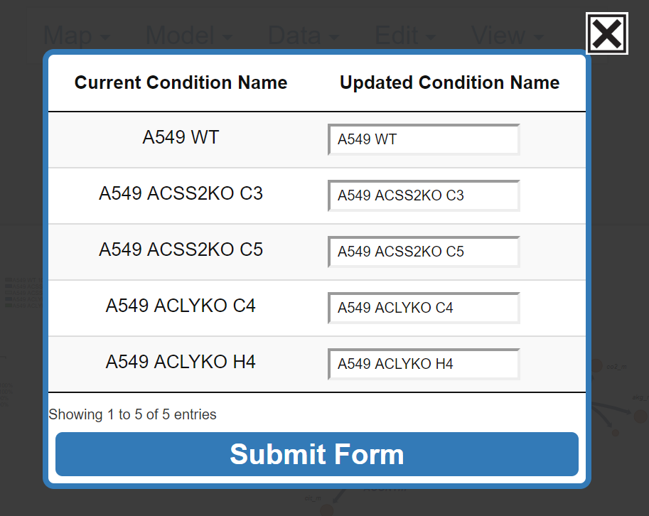
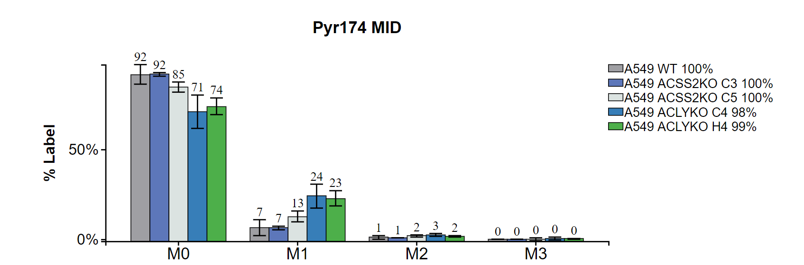
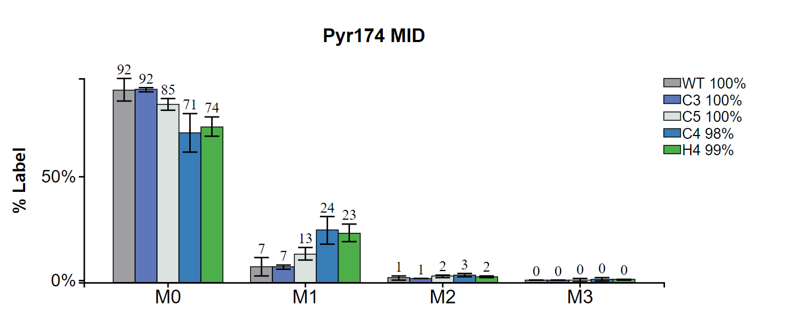
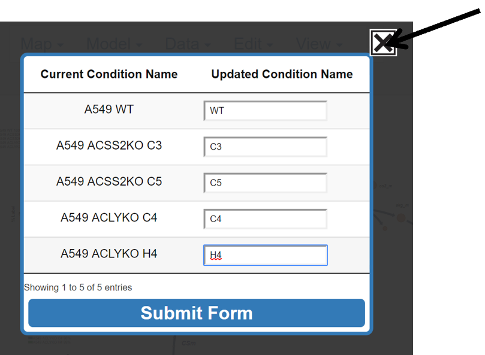

7. Edit the Data
This portion of the guide explains how to edit how data files are structured and organized. Specifically it will show how to alter the order in which groups are presented in graphs, reorder which data files are included in which conditions, and how to rename conditions.
7.1 Reorder Conditions
This button allows the user to select which conditions to graph and the order of the conditions on the graph.
Hover over the Condition Order button and left click.

7.1.1 Organize Conditions
Left click and drag the condition below To Graph and let go:

Continue moving each condition and rearrange as needed, the blue rectangle shows where the current condition will be placed.

7.1.2 Submit or Abort Changes
Submit changes by left clicking submit. Abort changes by clicking the X in the top right.
Submit:

Before Submit:

After Submit:

Abort:

7.2 Reorder Files
This button allows the user to reorganize their data files into new groups.
7.2.0 Make Options Appear
Hover over and click Reorder Files:

After Click:

7.2.1 Adding a Group
Now files can be organized as described in section ____ Left click in the white box next to Condition Name and type the desired name:
7.2.2 Submit or Abort Changes
NOTE: In order to submit all groups must have at least one file. To submit left click Submit Form. To abort left click the X in the top right. After submission, Escher Trace graphs will be reprinted with the updated file organization.
Before Submit:
AVI
After Submit:
AVI
7.3 Edit Condition Names
This button allows the user to change the name of the conditions included in the Escher Trace graphs.

7.3.1 Update Condition Name
Left click on the white box next to the current condition name and type the new desired name.

7.3.2 Submit or Abort Changes
Click on Submit Form to submit changes and left click on the X in the top right to abort changes. After submission, Escher Trace graphs will be updated with the new condition names.
Submit:

Before Submit:

After Submit:

Abort:
